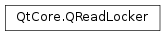

QReadLocker¶
Synopsis¶
Detailed Description¶
The
PySide2.QtCore.QReadLockerclass is a convenience class that simplifies locking and unlocking read-write locks for read access.The purpose of
PySide2.QtCore.QReadLocker(andPySide2.QtCore.QWriteLocker) is to simplifyPySide2.QtCore.QReadWriteLocklocking and unlocking. Locking and unlocking statements or in exception handling code is error-prone and difficult to debug.PySide2.QtCore.QReadLockercan be used in such situations to ensure that the state of the lock is always well-defined.Here’s an example that uses
PySide2.QtCore.QReadLockerto lock and unlock a read-write lock for reading:lock = QReadWriteLock() def readData(): locker = QReadLocker(lock) # ... return dataIt is equivalent to the following code:
lock = QReadWriteLock() def readData(): locker.lockForRead() # ... locker.unlock() return dataThe
PySide2.QtCore.QMutexLockerdocumentation shows examples where the use of a locker object greatly simplifies programming.
-
class
PySide2.QtCore.QReadLocker(readWriteLock)¶ Parameters: readWriteLock – PySide2.QtCore.QReadWriteLockConstructs a
PySide2.QtCore.QReadLockerand lockslockfor reading. The lock will be unlocked when thePySide2.QtCore.QReadLockeris destroyed. Iflockis zero,PySide2.QtCore.QReadLockerdoes nothing.See also
-
PySide2.QtCore.QReadLocker.__enter__()¶
-
PySide2.QtCore.QReadLocker.__exit__(arg__1, arg__2, arg__3)¶ Parameters: - arg__1 –
PyObject - arg__2 –
PyObject - arg__3 –
PyObject
- arg__1 –
-
PySide2.QtCore.QReadLocker.readWriteLock()¶ Return type: PySide2.QtCore.QReadWriteLockReturns a pointer to the read-write lock that was passed to the constructor.
-
PySide2.QtCore.QReadLocker.relock()¶ Relocks an unlocked lock.
See also
-
PySide2.QtCore.QReadLocker.unlock()¶ Unlocks the lock associated with this locker.
See also
© 2018 The Qt Company Ltd. Documentation contributions included herein are the copyrights of their respective owners. The documentation provided herein is licensed under the terms of the GNU Free Documentation License version 1.3 as published by the Free Software Foundation. Qt and respective logos are trademarks of The Qt Company Ltd. in Finland and/or other countries worldwide. All other trademarks are property of their respective owners.